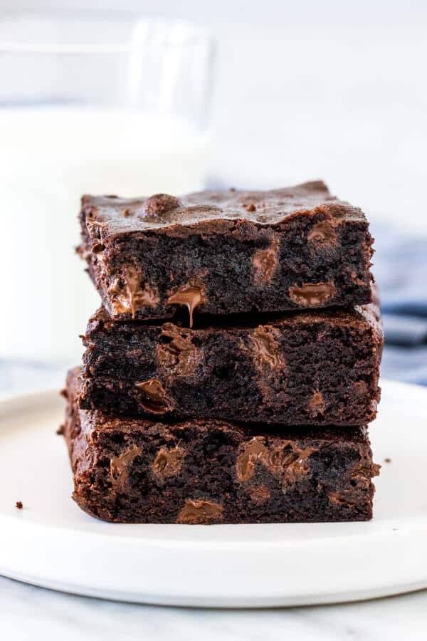

Brownies

Description
If you like your brownies chewy, gooey and extra chocolatey – then these one-bowl chewy brownies are for you! Made with oil and cocoa powder so you likely won’t even need an extra grocery trip, they’re waaayyy better than boxed brownies!
Ingredients
- 1/2 cup vegetable oil or canola oil
- 1 1/4 cup white sugar
- 2 large eggs
- 1 large egg yolk discard the white
- 1 teaspoon vanilla extract
- 3/4 cup all-purpose flour
- 2/3 cup cocoa powder
- 3/4 cup chocolate chips semi-sweet or dark
Steps
- Preheat the oven to 350F degrees.
- Line an 8x8 inch metal baking pan* with aluminium foil and grease lightly, or line with parchment paper
- In a medium bowl, whisk together the oil and sugar.
- Whisk in the eggs, extra egg yolk and vanilla.
- Gently stir in the flour and cocoa powder. If needed, give the mixture a whisk to remove any lumps.*
- Then fold in the chocolate chips.
- Pour the batter into your prepared pan and bake for 25-30 minutes, or until the top looks set and an inserted toothpick comes out clean or with a few damp crumbs.
- Cool and then cut into bars. I let mine cool for over 2 hours before slicing for the photographs (you'll notice that the insides were still warm and melty).